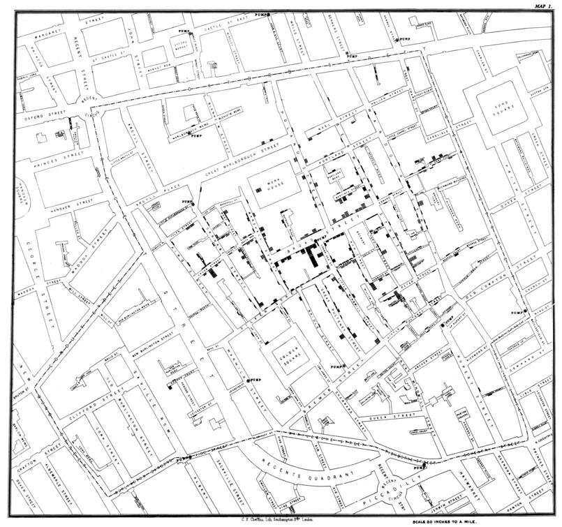
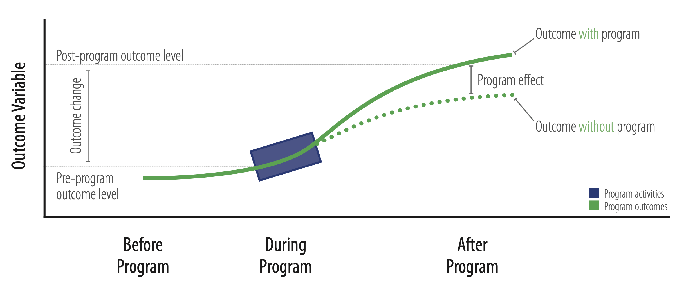
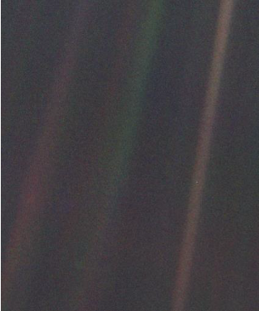
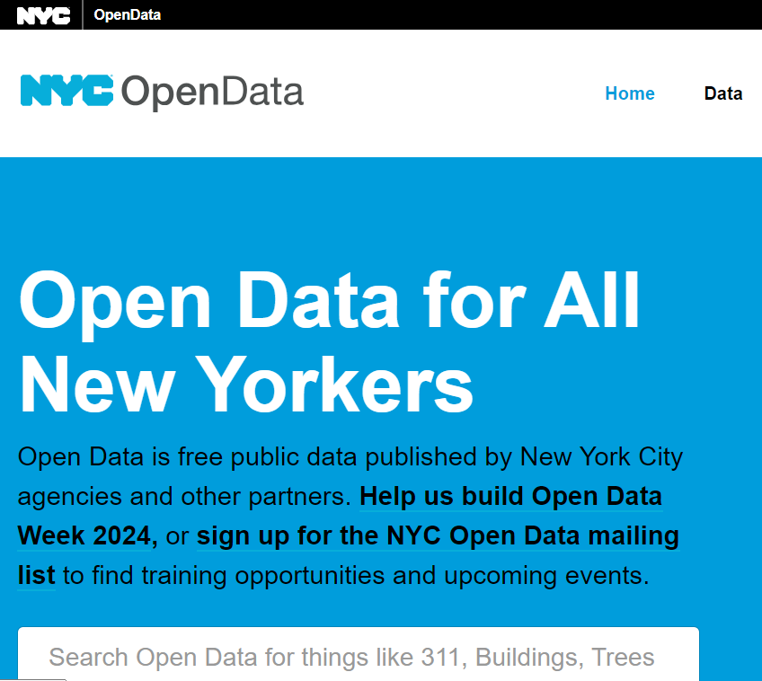
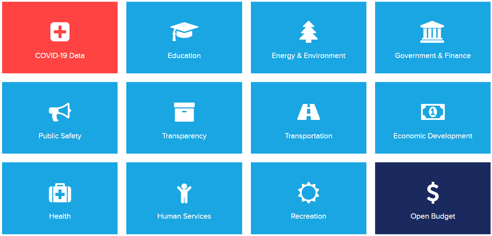
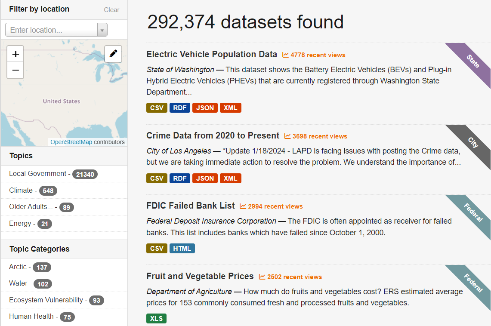
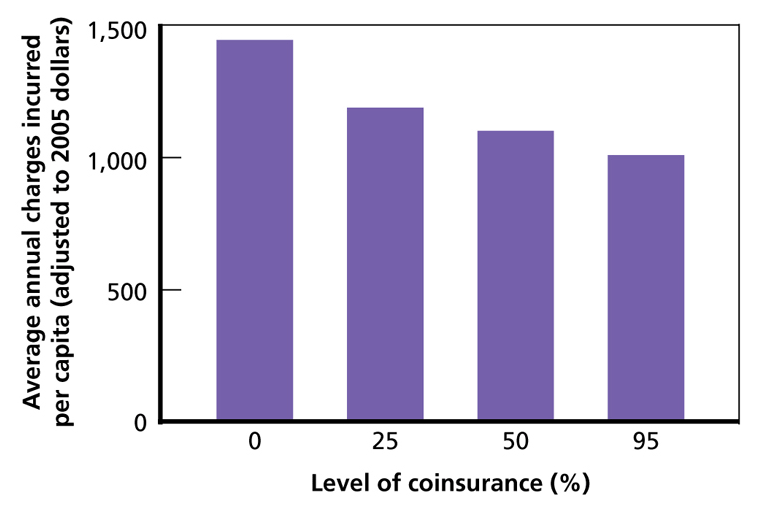

flowchart LR A(IRA) --> B(Subsidies) B --> C(Investment) B --> D(Jobs) C --> E(Domestic Manufacturing) D --> E(Domestic Manufacturing)
Lecture 1 Introduction
Gang He
January 28, 2025
The Stargate Project
- 500 Billion AI Infrastructure
- SoftBank, OpenAI, Oracle, and MGX
- Arm, Microsoft, NVIDIA, Oracle, and OpenAI
Question: What will be the impact of this project?
Source: OpenAI
About me
Professor Gang He
Welcome and icebreaker
- Rose: “something that is working well or something positive”
- Thorn: “something that isn’t working or something negative”
- Bud: “an area of opportunity or idea yet to be explored”
Why PAF 9174?
Goal: sensible program evaluation at reasonable cost
- Funder
- Government/NGO/Public Institutions/Citizens
- Program manager/staff
- Executives
- Evidence-based policy and management decisions
Organization
- Syllabus
- Brightspace
- Office hour
- Case studies
- Evaluation report
John Snow, Cholera, the Broad Street Pump

Source: Wikipedia; Learn more on Google Map
Cost saving of global supply chain

Source: Helveston, He, and Davidson (2022)
Program & Program Evaluation
Program:
A program is a set of resources and activities directed toward one or more common goals, typically under the direction of a single manager or management team.
Program Evaluation:
Program evaluation is the application of systematic methods to address questions about program operations and results. It may include ongoing monitoring of a program as well as one-shot studies of program processes or program impact. The approaches used are based on social science research methodologies and professional standards.
Source: Newcomer, Hatry, and Wholey (2015)
Capturing the wedege
Source: Andrew Wheiss
Theory of change
Big data and AI

Perspective:
Universe created:
- 13.8 billion years ago
Earth created:
- 4.54 billion years ago
Modern human:
- 300,000 years ago
Civilization:
- 12,000 years ago
Written record:
- 5,000 years ago
- 1943: Neural networks
- 1957: Perceptron
- 1974-86: Backpropagation, RBM, RNN
- 1989-98: CNN, MNIST, LSTM, Bidirectional RNN
- 2006: “Deep Learning”, DBN
- 2009: ImageNet
- 2012: AlexNet, Dropout
- 2014: GANs
- 2014: DeepFace
- 2016: AlphaGo
- 2017: AlphaZero, Capsule Networks
- 2018: AlphaFold 1, BERT
- 2021: AlphaFold 2
- 2023: ChatGPT
- 2024: Sora, Gemini
NYC Open Data
Learn more: https://opendata.cityofnewyork.us/
Open NY
Learn more: https://data.ny.gov/
Federal Data
Learn more: https://data.gov/
Data science for Social Good

Data science
- Collect
- Analyze
- Communicate
Causal Revolution
Evidence based medecine
Evidence based policy
Example: RAND’s Health Insurance Experiment (HIE)

Key findings:
- Cost sharing reduced spending for health care services
- Participants with cost sharing made fewer medical visits and were admitted to hospitals less frequently
- Reduced spending resulted entirely from less use of care; the costs of care were not affected
- Cost sharing had no detrimental effects on participants’ health, except for the sickest and poorest patients
Not all policies are based on evidence
- Value
- Politics
- Feasibility
- Quality of evidence and research
Program Evaluation
Data Science + Causal Inference
Case studies
- Jobs Plus in New York City
- Advanced Research Projects Agency-Energy
- Northwest Housing Associates
- NYC Gifted & Talented Program
- Benefits and Costs of the Clean Air Act 1990-2020
- Other case ideas are welcome
References
Helveston, John Paul, Gang He, and Michael R. Davidson. 2022. “Quantifying the Cost Savings of Global Solar Photovoltaic Supply Chains.” Nature 612 (7938): 83–87. https://doi.org/10.1038/s41586-022-05316-6.
Newcomer, Kathryn E., Harry P. Hatry, and Joseph S. Wholey. 2015. Handbook of Practical Program Evaluation. 4th edition. San Francisco: Jossey-Bass.